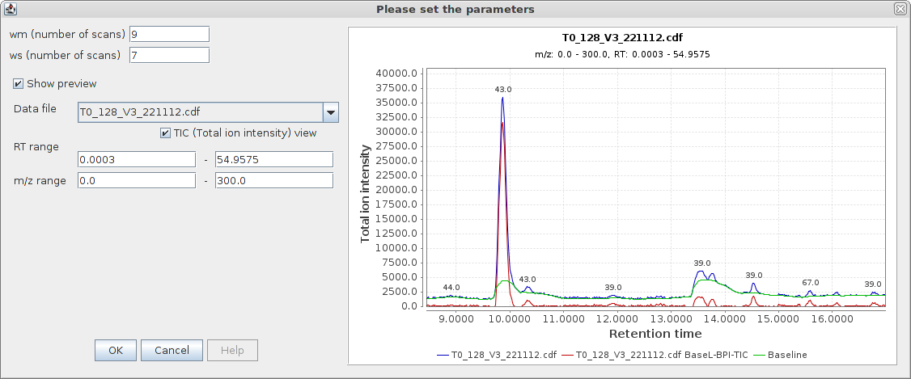
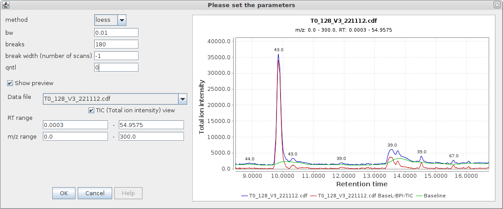

Baseline correction
Description
This module performs baseline correction on raw data files. It is designed to compensate for gradual shifts in the
chromatographic baseline by detecting the baseline and then subtracting it from the raw data intensity values. The
module proceeds as follows for each raw data file passed to it:
- The full range of m/z values present in the raw data is divided into a series of bins of a specified width (see
m/z bin width).
- For each bin a chromatogram is constructed from the raw data points whose m/z values fall within the bin. This
chromatogram (see Chromatogram type) may be either the base peak
chromatogram or total ion count (TIC) chromatogram.
- The raw intensity values of each data point in a bin are corrected by subtracting the bin's baseline.
Subtraction of baseline intensity values proceeds according to the type of chromatogram used to determine the
baseline.
If the base peak chromatogram was used then the corrected intensity values are calculated as follows:
Icorr = max(0, Iorig
- Ibase)
If the TIC chromatogram was used then the corrected intensity values are calculated as follows:
Icorr = max(0, Iorig
* (1 - Ibase / Imax))
where Iorig, Ibase, Imax and Icorr are the original, baseline, maximum and corrected
intensity values, respectively, for a given scan and m/z bin. If Ibase
is less or equal to zero then no correction is performed, i.e. Icorr = Iorig.
- A new raw data file is generated from the corrected intensity values.
Methods Common Parameters
- Filename suffix
- The text to append to the name of the baseline corrected raw data file.
- Chromatogram type
- TIC: total ion count, i.e. summed intensities per scan, or
Base peak intensity: maximum intensity per scan.
- MS-level
- MS level to which to apply correction. Select "0" for all levels.
- Use m/z bins
- Baselines can be calculated and data points corrected per m/z bin or to the entire raw data file. If no binning
is performed then a single chromatogram is calculated for the entire raw data file and its baseline used to
correct the full data file. No binning is very quick but much less accurate and so is only suitable for
fine-tuning the smoothing and asymmetry parameters.
- m/z bin width
- The width of the m/z bins if binning is performed (see use m/z bins).
Smaller bin widths result in longer processing times and greater memory requirements. Avoid values below 0.01.
- Correction method
- The width of the m/z bins if binning is performed (see use m/z bins).
Smaller bin widths result in longer processing times and greater memory requirements. Avoid values below 0.01.
- Remove source file
- Whether to remove the original raw data file once baseline correction is complete.
Methods Specific Descriptions
Rolling Ball Corrector
The corrector estimates a trend based on the Rolling Ball algorithm, and subtracts it from the raw data intensity values.
(Ideas from Rolling Ball algorithm for X-ray spectra by M.A.Kneen and H.J. Annegarn. Variable window width has been left out).
Read more...
Raw data file before (blue) and after (red) the corrector was applied. The trendline is shown in green.

Method parameters
- wm (number of scans)
- Width of local window for minimization/maximization (in number of scans).
- ws (number of scans)
- Width of local window for smoothing (in number of scans).
Peak Detection Corrector
The corrector estimates a trend based on the Peak Detection algorithm, and subtracts it from the raw data intensity values.
Peak detection is done in several steps sorting out real peaks through different criteria. Peaks are removed from
spectra and minimums and medians are used to smooth the remaining parts of the spectra.
(A translation from Kevin R. Coombes et al.'s MATLAB code for detecting peaks and removing baselines).
Read more...
Raw data file before (blue) and after (red) the corrector was applied. The trendline is shown in green.

Method parameters
- left (number of scans)
- Smallest window size for peak widths (in number of scans).
- right (number of scans)
- Largest window size for peak widths (in number of scans).
- lwin (number of scans)
- Smallest window size for minimums and medians in peak removed spectra (in number of scans).
- rwin (number of scans)
- Largest window size for minimums and medians in peak removed spectra (in number of scans).
- snminimum
- Minimum signal to noise ratio for accepting peaks.
- mono
- Monotonically decreasing baseline if ‘mono’ > 0.
- multiplier
- Internal window size multiplier.
Rubber Band Corrector
The corrector estimates a trend based on the Rubber Band algorithm (which determines a convex envelope for
the spectra - underneath side), and subtracts it from the raw data intensity values.
Read more...
Raw data file before (blue) and after (red) the corrector was applied. The trendline is shown in green.

Method parameters
- noise
- Ignored if \"auto noise\" is checked. Noise level to be taken into account.
- auto noise
- Determine noise level automatically (from lower intensity scan).
- df
- Degree of freedom.
- spline
- Logical indicating whether the baseline should be an interpolating spline through the support points or piecewise linear.
- bend factor
- Does nothing if equals to zero. Helps fitting better with low \"df\". Try with 5^4, to start palying with...
Local Minima + LOESS Corrector
The corrector estimates a trend based on Local Minima + LOESS (smoothed low-percentile intensity), and subtracts it from the raw data intensity values.
Read more...
Raw data file before (blue) and after (red) the corrector was applied. The trendline is shown in green.

Method parameters
- method
- "loess" (smoothed low-percentile intensity) or "approx" (linear interpolation).
- bw
- The bandwidth to be passed to loess.
- breaks
- Number of breaks set to M/Z values for finding the local minima or points below a centain quantile of intensities; breaks -1 equally spaced intervals on the log M/Z scale.
- break width (number of scans)
- Overrides \"breaks\" value. Width of a single break. Usually the maximum width (in number of scans) of the largest peak.
- qntl
- If 0, find local minima; if >0 find intensities < qntl*100th quantile locally.
Requirements
This module relies on the R statistical computing software being installed
and a few "packages" being installed in R.
Note: Depending on the system configuration, this may be easier or mandatory to perform these operations under administrative privileges.
Quick install - The whole thing can be setup as follows:
install.packages(c("Rserve", "ptw", "baseline", "hyperSpec"))
source("http://bioconductor.org/biocLite.R")
biocLite("PROcess")
Detailed install:
- Rserve (All correctors): provides an interface between
MZmine and R.
To install Rserve from CRAN packages run R and enter:
install.packages("Rserve")
- ptw (Asymmetric corrector):
parametric time-warping provides the asymmetric least-squares implementation.
To install ptw run R and enter:
install.packages("ptw")
- baseline (RollingBall and PeakDetection correctors):
provides a trend based on "Rolling Ball" and "Peak Detection" algorithms implementation.
To install baseline run R and enter:
install.packages("baseline")
- hyperSpec (RubberBand corrector):
provides a trend based on "Rubber Band" algorithm (which determines a convex envelope for the spectra) implementation.
To install hyperSpec run R and enter:
install.packages("hyperSpec")
- PROcess (Local Minima + LOESS corrector):
provides the local minima search + LOESS (smoothed low-percentile intensity) implementation.
To install PROcess run R and enter:
source("http://bioconductor.org/biocLite.R")
biocLite("PROcess")
References